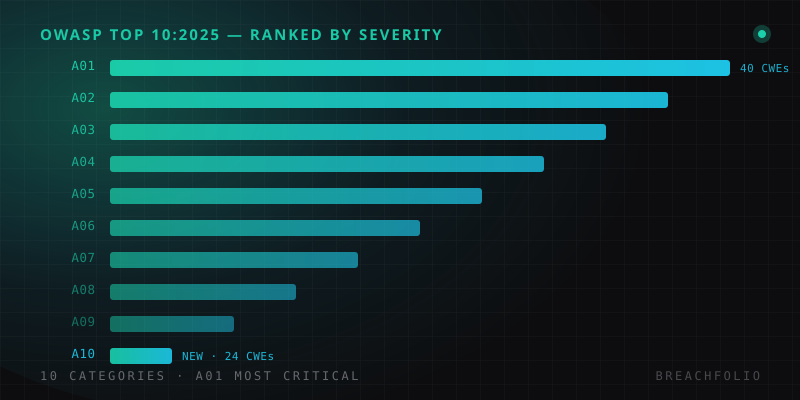

OWASP Top 10 (2025): quick reference.
The current edition, in plain language – what changed from 2021, and what each category actually means for your codebase.
If the list you're using still starts with "Broken Access Control, Cryptographic Failures, Injection..." in the 2021 order, it's out of date. OWASP Top 10:2025 is the current edition, and the reshuffle isn't cosmetic – categories moved, one was merged into another, and a brand-new category appeared for the first time. Here's the full list with what it means in practice, not just the name.
The 2025 list
| Rank | Category | What it means | 2025 note |
|---|---|---|---|
| A01 | Broken Access Control | Roughly 1 in 27 tested applications has at least one of the 40 CWEs in this category. Server-Side Request Forgery (SSRF) is now folded in here. | Still #1, same as 2021. |
| A02 | Security Misconfiguration | Default credentials, verbose error pages left on in production, unnecessary features enabled, missing security headers – the boring stuff that turns out to matter most. | Jumped from #5 (2021) to #2. |
| A03 | Software Supply Chain Failures | Compromised npm packages, poisoned build pipelines – not just an old library version. | An expansion of 2021's Vulnerable and Outdated Components. |
| A04 | Cryptographic Failures | Weak or missing encryption for data in transit and at rest, hardcoded keys, outdated algorithms still in production. | – |
| A05 | Injection | SQL, NoSQL, OS command, and template injection. | The classic category, now without SSRF sitting inside it. |
| A06 | Insecure Design | Missing threat modeling, no security requirements gathered up front. See our STRIDE walkthrough for how to catch this earlier. | Risk baked in before a line of code is written. |
| A07 | Authentication Failures | Weak password policies, missing multi-factor authentication, session tokens that don't expire when they should. | – |
| A08 | Software or Data Integrity Failures | Trusting updates, plugins, or CI/CD pipelines without verifying their integrity. | Behind several high-profile supply-chain compromises. |
| A09 | Security Logging and Alerting Failures | Breaches that go undetected for months because nothing was logged, or logs existed but nobody was watching. | – |
| A10 | Mishandling of Exceptional Conditions | 24 CWEs covering improper error handling, logic errors, and systems that "fail open" – granting access or skipping a check when something goes wrong instead of denying by default. | Brand new for 2025, with 24 CWEs. |

What actually changed from 2021
Three things are worth internalizing if you learned the 2021 list: Security Misconfiguration got much more dangerous relative to everything else (#5 → #2), Vulnerable Components grew into the broader Supply Chain Failures category to reflect real incidents in build tooling and package registries, and Mishandling of Exceptional Conditions is genuinely new territory – it's about what your code does when something goes wrong, not what it does when everything goes right.
This isn't the same list as the LLM Top 10
OWASP maintains a separate Top 10 for LLM Applications, and the two get confused constantly because they share a publisher and a format. The web application list above assumes a traditional client-server app with a database behind it; the LLM list assumes a model that reads untrusted text and sometimes acts on it. Prompt injection: the LLM list's #1 entry – doesn't map cleanly onto any single category here, though it shares DNA with both A05 (Injection) and A06 (Insecure Design): it's an injection-shaped problem that ordinary input validation can't fully solve, which is exactly the kind of gap threat modeling is supposed to catch before it ships. If you're building a product that's a normal web app with an LLM feature bolted on – which describes most AI products in 2026 – you need both lists, not one instead of the other.
How to actually use this list
The Top 10 is a prioritization tool, not a checklist you tick once. Map each category against your own application during a threat-modeling pass, test the ones most relevant to your stack with tools like Burp Suite or OWASP ZAP, and revisit the mapping whenever you add a new dependency, a new auth flow, or a new integration – that's usually where the next entry on this list quietly shows up.
A concrete way to start: pick the three categories most likely to bite your specific stack – for a typical SaaS product that's usually A01 (Access Control), A02 (Misconfiguration), and A03 (Supply Chain) – and spend a focused afternoon on each rather than trying to audit against all ten at once. Depth on the categories that actually apply to you beats a shallow pass across all ten.
Frequently asked questions
What is new in the OWASP Top 10:2025 list?
What is #1 on the OWASP Top 10:2025?
Is the OWASP Top 10 the same as the OWASP Top 10 for LLM Applications?
How should the OWASP Top 10 actually be used?
Daniel A. and Óscar S. run Breachfolio, a small independent site about security and AI. This article was drafted with AI assistance and reviewed by a person before it went live. We write from documentation, vendor sources and published research rather than from original lab benchmarks, and we link a source in the sentence that relies on it. How we work · About us